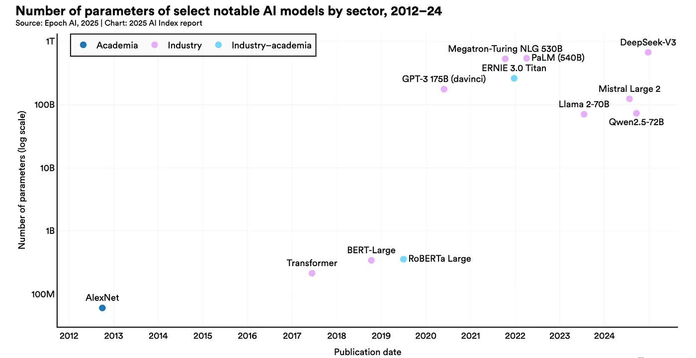
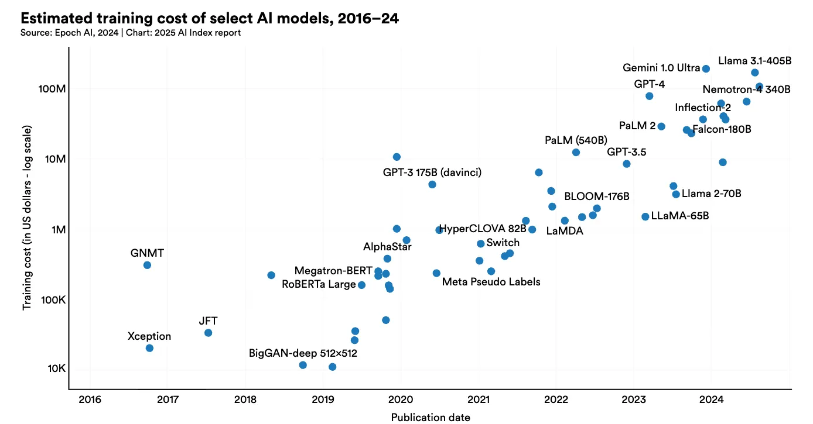
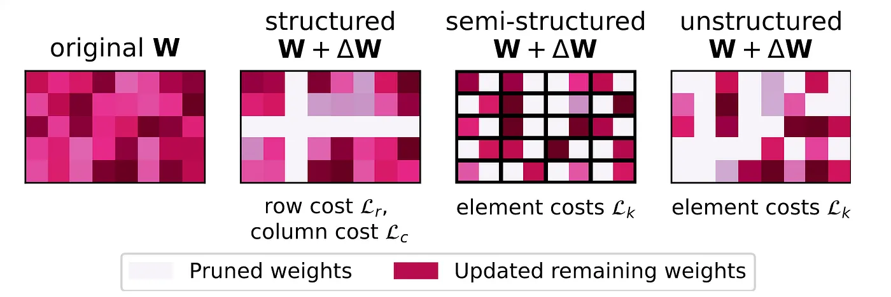
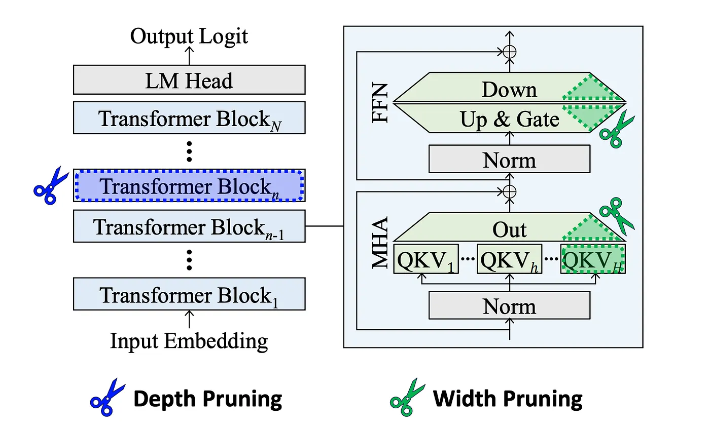
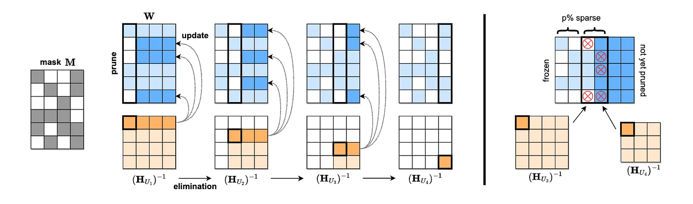
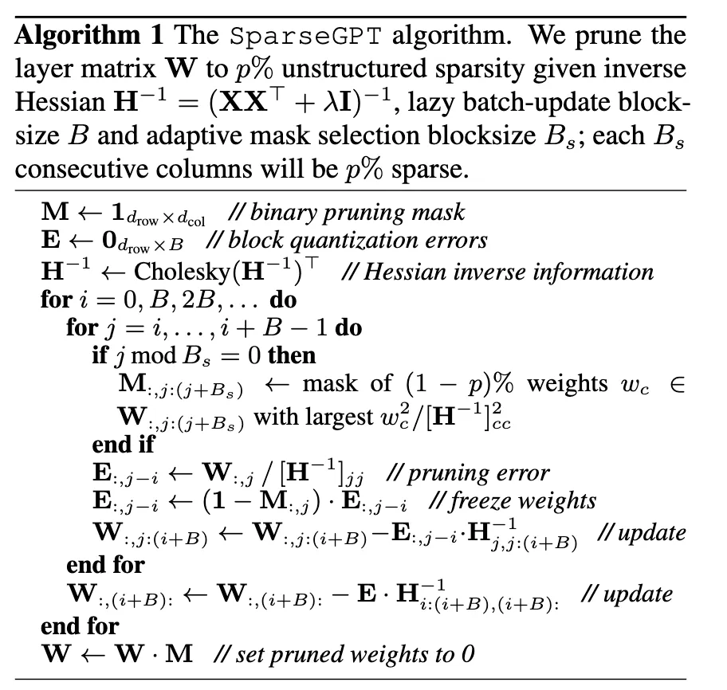
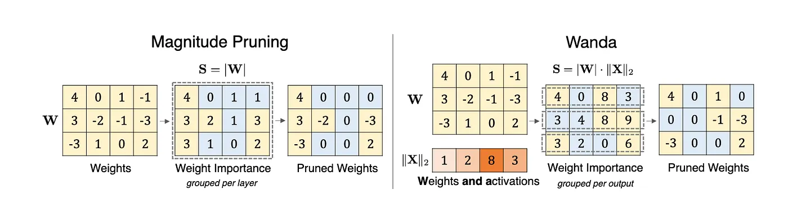
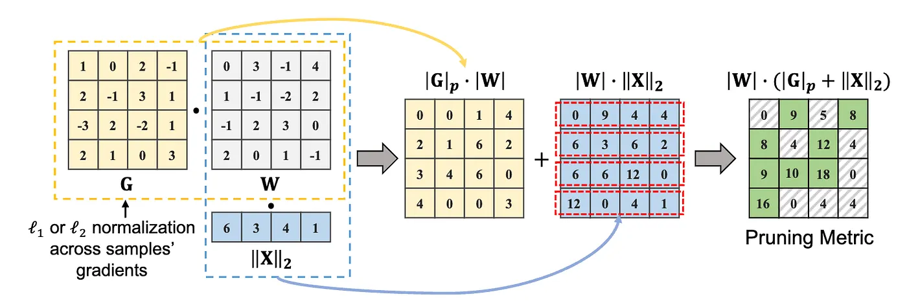

Introduction
Large Language Models (LLMs) like GPT-4, Claude, Gemini, and their open-source counterparts such as LLaMA, Deepseek, Qwen, GLM, and Mistral have revolutionized the domain of artificial intelligence. They have the ability to perform a wide range of tasks from writing poetry and solving complex problems to engage in conversations that feel remarkably human. However, they're massive, expensive to run, and require enormous computational resources.
The Efficiency Problem in AI and The Lottery Ticket Hypothesis
Before getting into the solutions, let's first understand the problem. Modern LLMs are computational monstrous. Let's have a look at Figure 1 and 2 and the following trend in the SOTA model parameters.
Look at these images from the recently published Artificial Intelligence Index Report 2025 [46].
Figure 1: The number of parameters in the notable AI models.
Figure 2: Estimated Training cost of selected AI models
- GPT-4 reportedly contains 1.76 trillion parameters [37, 38]
- Google's GLaM weighs in at 1.2 trillion parameters [36]
- Even "smaller" models like LLaMA-70B require multiple high-end GPUs just to run
- and many more …
These things show that even though these models work well, they are extremely expensive and out of reach of the general population of the world. To make it accessible for everyone, we must need to do something else. Is there a way? The answer to this question is yes!!
If you are familiar with the fundamental of deep learning you might be aware of the fact that deep learning models are massively overparameterized; meaning they have much more parameters than the dataset they are trained on. The exact mechanism of how it works is still unknown and explainability is one of the major area of research, however overparameterization somehow works and this is what makes sparsity techniques one of the major lever here. Pruning in Efficient ML has been sort of evergreen technique going back to 90s when papers like OBD[5], OBS[4] and EBD[42] first got published. Recent methods maked these older techniques work for modern LLMs. Methods like SparseGPT, Wanda, LLM-Pruner and NVIDIA's Minitron[3, 4] have shown that we can compress models by 2 to 4x while maintaining performance, making powerful AI accessible to organizations with limited computational resources.
Why does pruning work so well? I don't want to discuss in detail here but the Lottery Ticket Hypothesis [2] offers a great insight in this regard. The main intuition again comes from overparameterization hypothesis. The Lottery Ticket Hypothesis propose that a dense, randomly-initialized networks contain sparse subnetworks ("winning tickets") that, when trained in isolation with their original initialization, can match the full network's performance. The catch is these subnetworks only work with their specific initial weights and random reinitialization kills performance. This suggests massive networks may be necessary not for capacity, but to ensure some well-initialized subnetwork exists that can learn effectively. I mght write a seperate blog for this, if you are interested I would suggest you to read the paper. It is very interesting and pretty well written.
Part I: Pruning
What is Pruning?
Pruning is a technique used to reduce the size of a neural network by removing unnecessary or less significant parameters (weights) from the model. The primary objective of pruning is to create a smaller, more efficient model without significantly sacrificing accuracy. Pruning can be performed at different levels of the neural network, such as neurons, layers, or individual weights. Many neural networks are heavily over-parameterized. We can often remove 50–90% of a model's weights without significantly impacting performance. For most of the cases, a significance values (or importance score or saliency or sensitivity) is used to identify the least important weight/blocks/layers in order to remove them.
Different Types of Pruning
Figure 3: A general Framework for Structured, Semi-structured and unstructured pruning (source: https://arxiv.org/abs/2312.17244)
Unstructured Pruning
In unstructured pruning (non-structured pruning), a fraction of total weights within the neural network are removed based on their significance score. It is the finest-grained case of the pruning which operates at the individual weight level. It is called unstructured because it prunes x% of the total weight without any structure/pattern. Typically, weights with less significance values (or importance score or saliency or sensitivity) are considered less important and are pruned. If you are interested in the more formal definition of the unstructured pruning, you can have a look at the section 3.1 of this survey paper [3].
We will discuss different pruning criteria for finding the significance score for pruning in the next section. Methods like WANDA (Weights and Activations)[15] prune weights based on the importance score calculated by multiplying wight's magnitudes by corresponding input activations, requiring no retraining. GBLM Pruner [39] uses gradient, weight and activation to calculate the importance score and then prune the weight with the least score. Weight update based methods like SparseGPT [16] and OBS[4] uses second order gradient(Hessian) to first identify the pruning mask (weights to be pruned) and then to update the remaining weight to compensate for the pruned weight. Identification of the pruning mask works by identifying the least important weight based on the importance score which depends on the Hessian.
Pros & Cons:
- Maximum flexibility in choosing what to remove
- Fine-grained pruning leads to a significant reduction in model size. Can achieve very high sparsity levels (80–95%)
- Can be applied to any part of the network.
- The resulting sparsity can lead to inefficiencies in hardware acceleration, as many deep learning frameworks are optimized for dense matrix operations.

Figure 4: Unstructured Pruning: It prunes x% of the weight without any structure/pattern based on the saliency score: Dense weight (left image), Pruned weight (right image)
Structured Pruning
Structured pruning takes a different approach, instead of removing individual weights, it removes entire components like neurons, attention heads, or even complete layers.
Pros
- Immediate speedup on standard hardware
- Smaller model files for easier deployment
- Predictable performance gains that align with theoretical calculations
The choice between structured and unstructured pruning often comes down to deployment requirements: if you need immediate inference speedup, structured pruning is typically the way to go. To understand different types of structured pruning and pruning metric used in this method, look at my blog here.
Figure 5: Comparison of pruning units. Width pruning reduces the size of projection weight matrices. Depth pruning removes Transformer blocks, or individual MHA and FFN modules.[source: Shortened LLaMA]
Semi-Structured Pruning
This is the middle ground, which combines elements of both approaches. The most popular variant is N:M sparsity, where N weights are pruned from every consecutive group of M weights. For example, in 2:4 magnitude pruning [39], 2 parameter with lowest absolute value of magnitude from the group of 4 is removed as shown below.
2:4 Sparsity Pattern:
Original: [0.8, 0.2, 0.9, 0.1] → Pruned: [0.8, 0.0, 0.9, 0.0]
Original: [0.3, 0.7, 0.4, 0.6] → Pruned: [0.0, 0.7, 0.0, 0.6]This approach has gained traction because it can leverage specialized hardware features. NVIDIA's new GPUs have built-in support for 2:4 sparsity patterns, providing automatic acceleration [40].
Dynamic Pruning
Dynamic pruning [10, 11, 12, 13, 14, 15, 16] adjusts the model structure during training rather than after it, allowing the pruning process to adapt to the model's evolving understanding. Methods like "Fire Together Wire Together" use self-supervised mask prediction to identify which connections should be preserved or pruned during training.
Part II: Pruning Criteria
Now that we understand what to prune (individual weights, neurons, or layers), let's explore how to decide which weights to remove. This is the central question in neural network pruning: How do we measure a weight's importance? The most simple thing that we all can think of this is to consider is the magnitude of the weight as the saliency score but it doesn't work well for the obvious reason (A small weight can be important if removing it requires large compensatory changes elsewhere in the network or say if it corresponds to attention sink[46] in modern LLMs).
In this section, we'll explore two fundamental approaches for the saliency measure and pruning algorithms:
- Weight Update Based Methods (OBD, OBS, SparseGPT): These methods use second-order information (Hessian) to both identify which weights to prune AND how to update the remaining weights to compensate for the removal.
- Direct Saliency Methods/Methods Without Weight Updates (WANDA, GBLM-Pruner): These methods compute importance scores using first-order information (gradients, activations, weights) without explicitly updating other weights.
Weight Update Based Methods
Let's try to understand the basic mathematics of neural network pruning. I would assume that you have some basic understanding of linear algebra and neural network here. We will start with Optimal Brain damage.
1. Optimal Brain Damage (OBD)
OBD is considered as one of the first paper to introduce the idea of neural network pruning. The fundamental question OBD asks is: If I set a weight to zero, how much will the loss function change? They approximate this using a Taylor expansion of the loss function around a local minimum. When we perturb weights by δw, the loss E changes by δE, given as:
Equation 1: Second-order Taylor expansion showing how loss E changes when weights are perturbed by δw. This approximation is the foundation of OBD's saliency measure.
Or in the matrix notation this can be written as follows:
Equation 2: Matrix notation of the above equation. Where g = gradient vector (∂E/∂w_i) and H = Hessian matrix (∂²E/∂wᵢ∂wⱼ)
OBD makes three key approximation to simplify the above equation. 1) At a minimum, g = 0 so the first term will become 0, 2) Ignore higher-order terms O(‖δw‖³) and 3) assume that the hessian is diagonal which implies that H = ∂²E/∂wᵢ∂wⱼ ≈ 0 whenever i ≠ j. This means weights can be considered independently, that is changing one weight doesn't affect the optimal values of others. Under this diagonal assumption, our equation simplifies to δE ≈ ½ Σᵢ hᵢᵢ(δwᵢ)². where hᵢᵢ = ∂²E/∂wᵢ² is the i-th diagonal element of the Hessian.
When we delete a weight, we're essentially making the perturbed weight δwᵢ + wᵢ = 0 and hence setting δwᵢ = -wᵢ. This gives us the saliency formula to sᵢ = ½ hᵢᵢwᵢ²
where:
$$h_{ii} = \frac{\partial^2 E}{\partial w_i^2}$$ $$\delta w_i = -w_i$$Equation 3 (a, b, c): Final Saliency score for OBD
The saliency term has two components: wᵢ² captures the magnitude of the weight (larger weights generally matter more), while hᵢᵢ captures the curvature of the error surface (high curvature means the error is very sensitive to changes in this weight). Weights with low saliency can be safely deleted.
2. Optimal Brain Surgeon (OBS)
OBS build upon the OBD by using the full Hessian (all second-order interactions) and updating remaining weights to compensate for pruned weights without retraining. Which is basically not considering the third assumption of OBD. If we just consider the assumption 1 and 2 of OBD discussed above, equation 2 takes the form of equation 4.
Equation 4: Change in the loss without any diagonal approximation. Note that H is not a diagonal matrix here unlike OBD.
Since our goal is to prune the weight wᵢ that leads to smallest increase in the error δE, we can formulate our optimization problems as shown in equation 5. Note that the condition δwᵢ + wᵢ = 0 in the equation 5 comes from the fact that we want to prune the weight wᵢ, meaning the value of the weight after perturbation must be zero as discussed in the case of OBD.
Equation 5: Constrained optimization problem for OBS. Note that since the non-diagonal elements of H can be non-zero we need to solve this constrained optimization using Lagrange multiplier and find the optimal values of saliency score and the perturbation δw.
We can form the a Lagrangian from above equation as shown in equation 6. Note that eᵢ is a unit vector in the weight space corresponding to (scalar) weight wᵢ.
Equation 6: Lagrangian for constrained equation 5.
where λ is a Lagrange multiplier. We can take derivatives w.r.t. δw and λ and set them to zero and then employ the constraints δwᵢ + wᵢ = 0, to find that the optimal weight change δw and resulting change in error δE as shown in equation 7 below.
Equation 7: Optimal weight change δw and resulting change in error δE
Hence, the saliency formula takes the following form in Equation 8. Note that the update formula δw adjusts all remaining weights based it's value provided by equation 7.
Equation 8: Saliency formula for OBS
Comparing OBD and OBS
At first glance, the saliency formulas look similar:
- OBD: sᵢ = ½hᵢᵢwᵢ² (uses diagonal of Hessian)
- OBS: sᵢ = wᵢ²/2[H⁻¹]ᵢᵢ (uses diagonal of inverse Hessian)
But they're completely different, OBD uses the diagonal elements of H but OBS uses the diagonal elements of H⁻¹. For a diagonal matrix, [H⁻¹]ᵢᵢ = 1/hᵢᵢ, so OBS reduces to OBD. But when H has significant off-diagonal terms (which it always does in practice for neural networks), these give completely different results. A weight might have high hᵢᵢ (OBD says "important!") but also high [H⁻¹]ᵢᵢ (OBS says "safe to prune because other weights can compensate"). OBD would keep the weight; OBS correctly identifies it as redundant.
The Computational Challenge
The difficulty with OBS is computing H⁻¹ for a network with thousands or millions of weights, the Hessian matrix is enormous. OBS shows that:
- The Hessian can be approximated as a sample covariance matrix: H ≈ (1/P)∑ₖ X⁽ᵏ⁾(X⁽ᵏ⁾)ᵀ where X⁽ᵏ⁾ are gradient vectors for sample k.
- This allows H⁻¹ to be computed recursively during training using efficient matrix inversion formulas (the Woodbury matrix identity) shown below in Equation 9.
Equation 9: The Woodbury matrix identity, recursive algorithm for computing inverse of Hessian. Note that, X⁽ᵏ⁾ are gradient vectors for sample k.
3. Sparse GPT
The simple OBS implementation doesn't scale to large networks because computing and inverting H is O(n^3) where n is the number of weights. For a layer with even 4096 weights, this means ~68 billion operations. For modern LLMs with billions of weights, this is completely intractable. More recent methods like Adaprune [44] solves this problem converting the full model compression problems as the layerwise subproblem. For each layer with weight matrix W and input X, the goal is to find a pruning mask M and updated weights Wc such that:
Equation 10: Layer wise reconstruction error
where ⊙ denotes element-wise multiplication. Once the mask is fixed, optimal reconstruction requires solving for each row i:
Equation 11: Optimal reconstruction for the mixed mask M
This requires inverting Hₘᵢ = Xₘᵢ Xᵀₘᵢ separately for each row because different rows have different masks Mᵢ. For a d×d weight matrix, this costs O(d⁴), which is completely intractable for LLMs.
Key Observation and Column-by-Column Processing
One key observation here is the full Hessian H = XX^T is the SAME for all rows (it only depends on inputs X, not on weights W). The problem is that masking it is different per row that is (Hₘᵢ)⁻¹ ≠ (H⁻¹)_Mi ← Can't just mask the inverse!
To solve these issue SparseGPT makes this approximations -- instead of handling all pruned weights at once, process columns left-to-right and prune one column at a time. It only updates a subset U of weights. This is still optimal for that subset just there is less effective compensation of the weight because there will be fewer weights available to absorb the error. Define index subsets:
- U₁ = {1, 2, 3, …, d} (all columns)
- U₂ = {2, 3, …, d} (removed column 1)
- U₃ = {3, …, d} (removed columns 1,2)
- …
- Uⱼ = {j, j+1, …, d} (columns j onwards)
More formally this can be defined in equation 12. In words, starting with U₁ being the set of all indices, each subset Uⱼ₊₁ is created by removing the smallest index from the previous subset Uⱼ .
Equation 12: a sequence of index sets. In words, starting with U₁ being the set of all indices, each subset Uⱼ₊₁ is created by removing the smallest index from the previous subset Uⱼ .
For each subset Uⱼ, define its Hessian: H_Uⱼ = (XX^T)_Uⱼ and it's inverse as follows.
Equation 13: Inverse hessian of the subset Uⱼ
we can compute B = (H_Uⱼ)⁻¹ recursively using Gaussian elimination in O(d²) time as shown in equation 13 and the full sequence of d inverse Hessians costs O(d³) total.
Equation 14: Recursive relation for the Inverse of Hessian
This is just the submatrix of H corresponding to columns in Uⱼ. These Hessians impose a sequence of inverses: (H_U₁)⁻¹, (H_U₂)⁻¹, (H_U₃)⁻¹, …, (H_Uⱼ)⁻¹. More importantly when processing column j, all rows use the same H_Uⱼ because it only depends on which columns remain (j onwards), not on which specific weights in those columns are pruned.
Figure 6: [Left] Visualization of the SparseGPT reconstruction algorithm. Given a fixed pruning mask M, we incrementally prune weights in each column of the weight matrix W, using a sequence of Hessian inverses (HUj)−1, and updating the remainder of the weights in those rows, located to the "right" of the column being processed. Specifically, the weights to the "right" of a pruned weight (dark blue) will be updated to compensate for the pruning error, whereas the unpruned weights do not generate updates (light blue). [Right] Illustration of the adaptive mask selection via iterative blocking.(Figure 4 from SparseGPT paper[16])
Figure 6: SparseGPT algorithm from the original paper. Annotation in the official python implementation is provided in the appendix.
Thus SparseGPT solves the scalability problem of pruning massive LLMs by processing the weight matrix column-by-column from left to right. For each column, it first selects which weights to prune based on their saliency scores (computed using the Hessian inverse diagonal), then zeros out the pruned weights, and finally updates all the remaining weights to the right of the current column to compensate for the introduced error. The key trick is that by processing in this left-to-right order, the algorithm can compute a sequence of Hessian inverses recursively in O(d³) time instead of O(d⁴), and more importantly, each Hessian inverse in the sequence can be shared across all rows of the weight matrix.
Methods Without Weight Updates
As discussed above, these methods directly prune the weight based on the importance score/saliency without updating the weight and hence offer much faster pruning compared to weight update based methods.
1. WANDA
It prunes weights with the smallest magnitudes multiplied by the corresponding input activations, on a per-output basis. It is Motivated by the recent observation of emergent large magnitude features in LLMs.
Equation 15: Pruning metric or saliency for Wanda.
Figure 7: Illustration of the proposed method Wanda (Pruning by Weights and activations), compared with the magnitude pruning approach. Given a weight matrix W and input feature activations X, it compute the weight importance as the elementwise product between the weight magnitude and the norm of input activations (|W|· ∥X∥2). Weight importance scores are compared on a per-output basis (within each row in W), rather than globally across the entire matrix. (Figure 1 from WANDA paper, https://arxiv.org/abs/2306.11695)
2. GBLM-Pruner
GBLM-Pruner extends WANDA by adding gradient information to the pruning metric. All the methods discussed before assume that since model is trained gradient value should be 0, however that is not the case when authors empirically observe this. The pruning metric/saliency for this methods is given by equation 16.
Equation 16: Pruning metric or saliency for GBLM-Pruner. α is an empirically determined scaling factor (α = 100 ) and ∥G[:, i, j]∥p represents the ℓp norm of gradients across samples.
Figure 8: Illustration of method GBLM-Pruner. Given a weight matrix, W, a gradient matrix, G, and an input feature activation, X, weight importance is computed as an elementwise multiplication of weight magnitude and ℓ1 or ℓ2 norm of the gradients across multiple samples, denoted as ∥G∥p · |W|, optionally, it is promotable to add the multiplication of weight and the ℓ2 norm of input activations, denoted as |W| · ∥X∥2. (Figure 1 from GBLM-Pruner paper, https://arxiv.org/pdf/2311.04902)
Appendix
Basic OBS implementation
Here I tried to implement the naive version of OBS algorithm described in the paper. You can have a look at complete code from scratch here.
import numpy as np
def compute_hessian_inverse(X, alpha=1e-5):
"""
Compute inverse Hessian H^{-1} where H = (1/P) * X * X^T
Args:
X: Input gradients matrix (n_samples, n_weights)
alpha: Damping factor for numerical stability
Returns:
H_inv: Inverse Hessian (n_weights, n_weights)
"""
n_samples, n_weights = X.shape
P = n_samples
# Initialize with damped identity
H_inv = (1.0 / alpha) * np.eye(n_weights)
# Recursive update for each sample
for m in range(n_samples):
x = X[m:m+1, :].T # Column vector (n_weights, 1)
# Woodbury matrix identity update
numerator = H_inv @ x @ x.T @ H_inv
denominator = P + x.T @ H_inv @ x
H_inv = H_inv - numerator / denominator
return H_inv
def obs_pruning_step(weights, H_inv):
"""
Perform one step of OBS: find weight to prune and compute updates
Args:
weights: Current weight vector (n_weights,)
H_inv: Inverse Hessian matrix (n_weights, n_weights)
Returns:
q: Index of weight to prune
saliency: Saliency of that weight
weight_updates: Updates for all weights
"""
n_weights = len(weights)
# Compute saliency for each weight
# L_q = w_q^2 / (2 * [H^{-1}]_{qq})
H_inv_diag = np.diag(H_inv)
saliencies = (weights ** 2) / (2 * H_inv_diag)
# Find weight with minimum saliency (excluding already pruned weights)
active_weights = weights != 0
saliencies[~active_weights] = np.inf
q = np.argmin(saliencies)
# Compute weight updates: δw = -(w_q / [H^{-1}]_{qq}) * H^{-1}[:, q]
e_q = np.zeros(n_weights)
e_q[q] = 1.0
weight_updates = -(weights[q] / H_inv[q, q]) * (H_inv @ e_q)
return q, saliencies[q], weight_updates
# Example usage
if __name__ == "__main__":
# Simulate a small example
n_weights = 5
n_samples = 10
# Random weight gradients (in practice, computed from backprop)
X = np.random.randn(n_samples, n_weights) * 0.1
# Current weights (after training)
weights = np.array([0.5, 0.1, 0.8, 0.2, 0.3])
# Compute inverse Hessian
H_inv = compute_hessian_inverse(X)
print("Initial weights:", weights)
print("\nPruning iterations:")
# Prune 3 weights
for iteration in range(3):
q, saliency, updates = obs_pruning_step(weights, H_inv)
print(f"\nIteration {iteration + 1}:")
print(f" Pruning weight {q}: {weights[q]:.4f}")
print(f" Saliency: {saliency:.6f}")
# Apply updates
weights = weights + updates
# Delete the pruned weight
weights[q] = 0
print(f" Updated weights: {weights}")
Code for SparseGPT
You can have a look at the original code of SparseGPT here. It is very simple to follow and the most of the code for llm pruning is loosely based on this codebase. I have added the annotated version of the sparsegpt.py from the repo here.
References
- A Survey on Knowledge Distillation of Large Language Models
- The Lottery Ticket Hypothesis: Finding Sparse, Trainable Neural Networks
- A Survey on Deep Neural Network Pruning-Taxonomy, Comparison, Analysis, and Recommendations
- Second order derivatives for network pruning: Optimal Brain Surgeon
- Optimal Brain Damage
- Compact Language Models via Pruning and Knowledge Distillation
- How to Prune and Distill Llama 3.1 8B to an NVIDIA Llama 3.1 Minitron 4B Model
- LLM Pruning and Distillation in Practice: The Minitron Approach
- Pruning vs Quantization: Which is Better?
- Fire Together Wire Together: A Dynamic Pruning Approach with Self-Supervised Mask Prediction
- Dynamic Model Pruning with Feedback
- PyTorch Tutorial: Dynamic Weight Pruning
- Manifold Regularized Dynamic Network Pruning
- FedMef: Towards Memory-efficient Federated Dynamic Pruning
- Frequency-Domain Dynamic Pruning for Convolutional Neural Networks
- Accelerating Deep Learning with Dynamic Data Pruning
- A Comprehensive Guide to Neural Network Model Pruning
- A Simple and Effective Pruning Approach for Large Language Models
- Plug-and-Play: An Efficient Post-training Pruning Method for Large Language Models
- SparseGPT: Massive Language Models Can Be Accurately Pruned in One-Shot
- Revisiting Intermediate Layer Distillation for Compressing Language Models: An Overfitting Perspective
- Can Unstructured Pruning Reduce the Depth in Deep Neural Networks?
- Towards Energy Efficient Spiking Neural Networks: An Unstructured Pruning Framework
- Revisiting Loss Modelling for Unstructured Pruning
- What Makes a Good Prune? Maximal Unstructured Pruning for Maximal Cosine Similarity
- Causal Unstructured Pruning in Linear Networks Using Effective Information
- LLM-Pruner: On the Structural Pruning of Large Language Models
- ShortGPT: Layers in Large Language Models are More Redundant Than You Expect
- ThiNet: A Filter Level Pruning Method for Deep Neural Network Compression
- Soft Filter Pruning for Accelerating Deep Convolutional Neural Networks
- Shortened LLaMA: Depth Pruning for Large Language Models with Comparison of Retraining Methods
- LaCo: Large Language Model Pruning via Layer Collapse
- Structured Pruning for Deep Convolutional Neural Networks: A Survey
- THE LLM SURGEON
- Importance Estimation for Neural Network Pruning
- Google GLaM
- GPT-4
- GPT Parameters
- GBLM-Pruner
- Learning both Weights and Connections for Efficient Neural Network
- Structured Sparsity in the NVIDIA Ampere Architecture
- Early Brain Damage
- Optimal Brain Surgeon: Extensions and performance comparisons
- Accelerated Sparse Neural Training: A Provable and Efficient Method to Find N:M Transposable Masks
- Efficient Streaming Language Models with Attention Sinks
- Artificial Intelligence Index Report 2025